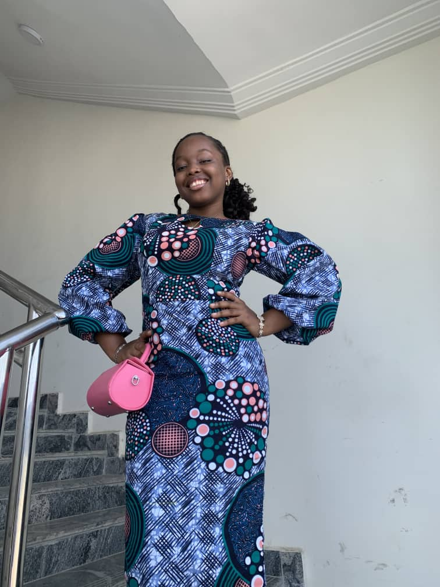

MY QUALIFICATIONS
Education:
I Graduated from Model High Secondary School, and I am Currently
pursuing Software Engineering at Veritas University
Leadership Qualities:
I am a student with a vision, a passion for excellence, and a
natural inclination towards leadership.Throughout
my academic journey, I've been privileged to be recognized for my
leadership abilities, traits that have earned me the respect and
admiration of my peers and mentors alike.
Innovative Thinker:
I pride myself on my ability to think outside the box. From
brainstorming sessions to problem-solving exercises, I bring a
fresh perspective to every challenge I encounter. My innovative
approach allows me to explore new ideas and discover unconventional
solutions that propel projects forward.
In conclusion, I am more than just a student; I am a leader, an
innovator, and a lifelong learner. With my blend of leadership qualities,
innovative thinking, effective communication, adaptability, and
commitment to empowering others, I am poised to make a meaningful impact
in the field of software engineering and beyond. As I continue my
journey at Veritas University and beyond, I am excited to see where my
passion and drive will take me.
